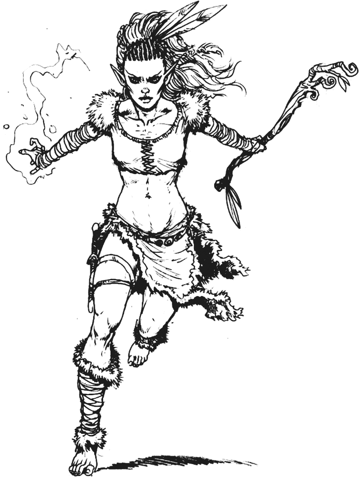
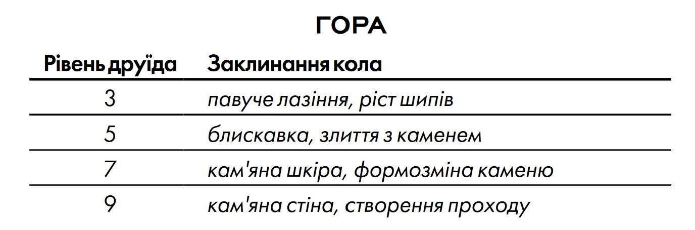
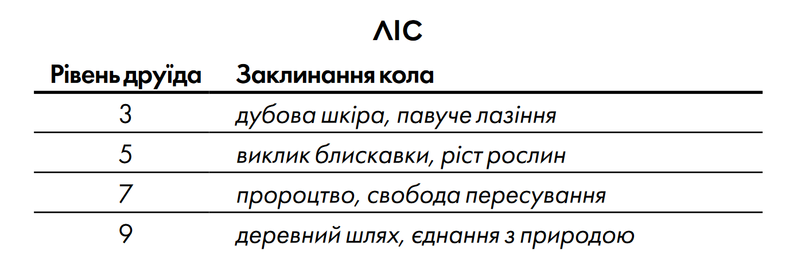
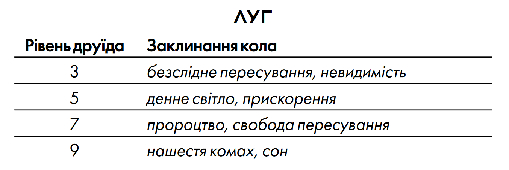
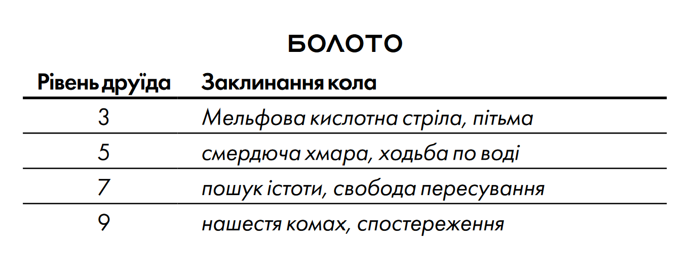
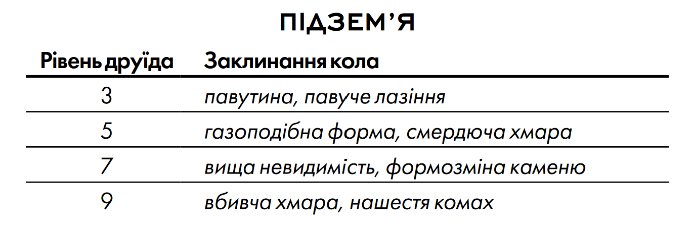
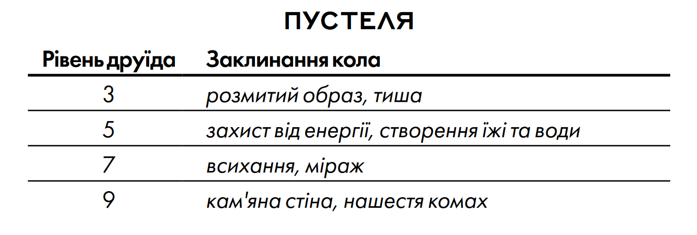
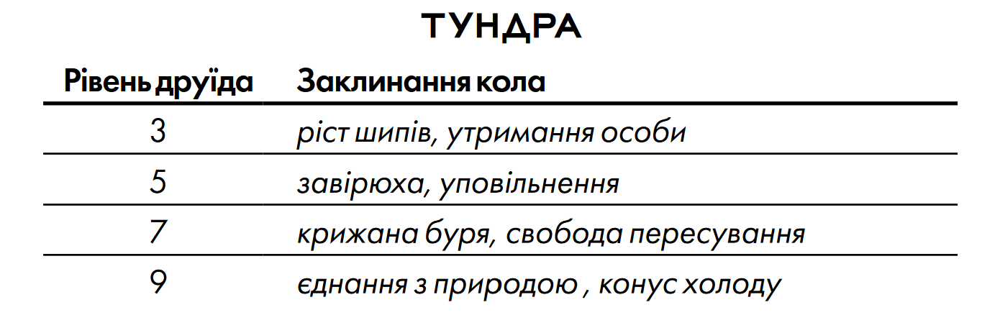
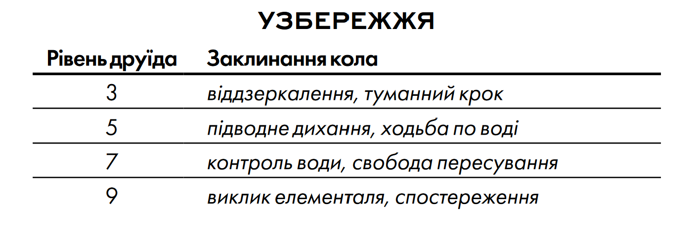

РОЗДІЛ 3. КЛАСИ
Шукачі пригод — це незвичні істоти, яких підштовхує до руху жага до життєвих вражень, на які інші ніколи б не наважилися. Це герої, які досліджують темні куточки світу і долають випробування, яким більшість жінок і чоловіків ніколи б не змогли протистояти.
Клас є основним мірилом талантів твого персонажа. Це не просто його професія, це — його покликання. Клас формує твоє уявлення про світ і взаємодію з ним, а також твоє відношення до інших створінь і сил мультивсесвіту. Боєць, наприклад, може дивитися на світ прагматично, з точки зору стратегії та маневрів, і бачити себе всього лише пішаком у великій грі. Жрець навпаки, може бачити себе в якості обраного учасника грандіозного плану божества, або конфлікту, який назріває між різними богами. У бійця є зв'язки в організаціях найманців або військах, а жрець може знати безліч священиків, паладинів і цілителів, які розділяють його релігійні вірування.
Твій клас дає тобі цілий ряд особливих умінь, таких як майстерність бійця у володінні зброєю і обладунками, або уміння виконувати заклинання у чарівника. На нижчих рівнях твій клас дає тобі лише два або три уміння, проте при досягненні вищих рівнів ти будеш здобувати нові здібності, а твої існуючі уміння покращаться. Опис кожного класу в цьому розділі включає в себе таблицю з коротким переліком всіх переваг, які ти отримуєш на кожному рівні, а також детальний опис кожної з них.
Шукачі пригод іноді можуть розвиватись одразу в декількох класах. Спритник може поміняти життєвий шлях і дати присягу паладина. Варвар може виявити приховані магічні здібності та почати навчатися в класі чарівника, паралельно продовжуючи вдосконалюватися як варвар. Ельфи відомі тим, що поєднують військову майстерність з магічною підготовкою, і розвиваються як бійці та чарівники одночасно. Опціональні правила такого комбінування класів називаються мультикласовістю, і описані в розділі 6.
Дванадцять класів, перерахованих в таблиці «Класи», зустрічаються майже у всіх світах DnD і визначають найбільш типових шукачів пригод.
ДРУЇД
Загальні відомості
Підкидаючи вгору сучкуватий посох із гостролиста, ельф викликає гнів небесної стихії і обрушує розряди блискавок на орків, які посміли загрожувати його лісу вогнем.
Високо в кроні дерева, пильно оглядаючи культистів, затаїлась людина, яка прийняла подобу леопарда, спостерігаючи з джунглів за чужорідною архітектурою храму Злої Стихії Повітря.
Рубаючи мечем з чистого полум'я, напів-ельф кидається в гущу армії скелетів, щоб знищити блюзнірську магію, яка повернула їм потворну подобу життя.
Закликаючи стихії або приймаючи подобу тварин, друїди втілюють непорушність, гнучкість і гнів природи. Вони ні в якому разі не володарі стихій — але, тим не мен ше, друїди відчувають себе частиною нездоланної волі матінки-природи.
СИЛИ ПРИРОДИ
На першому місці для друїда завжди стоїть природа. Саме вона є джерелом всіх їхніх заклинань і магічних здібностей, безпосередньо, або ж через природне божество. Багато хто віддає перевагу шляху духовного єднання з природою, але є й ті, хто просто служать богам диких просторів, тварин або стихій. Зазвичай віру друїдів, яка існує з давніх-давен, також називають Старою Вірою, протиставляючи її поклонінню у храмах та вівтарях.
Заклинання друїдів впливають на світ через тварин або навколишню природу. Це сила ікла та кігтя, сонця і місяця, вогню і бурі. Також друїди вчаться приймати вигляд звірів, а деякі настільки заглиблюються в це уміння, що назавжди залишаються у звіриному вигляді.
ЗБЕРЕЖЕННЯ РІВНОВАГИ
Для друїдів природа являє собою хитку рівновагу. Повітря, земля, вогонь і вода — ті чотири стихії, які становлять основу світу — повинні врівноважувати одна одну. Якщо одна зі стихій вийде в першість, світ може припинити існування, адже він буде поборений стихійною площиною і розірваний на елементарні складові. Щоб не допустити цього, друїди протистоять сектам Стихійного Зла та всім, хто прагне наділити будь-яку зі стихій більшою владою.
Також друїдів турбує тонка екологічна рівновага, необхідна флорі і фауні, а також готовність цивілізованих поселень жити в гармонії з природою, а не протиставляти себе їй. Жорстокість природи — частина природного порядку, і друїди не терплять усього чужорідного, включаючи аберацій (іллітіди і беголдери) та нежить (зомбі і вампіри). Іноді друїди здійснюють полювання на таких істот, особливо якщо ті наближаються до їх територій.
Друїди нерідко займаються охороною священних земель і областей незайманої природи. Втім, при достатній загрозі природній рівновазі або підзахисній землі, друїд може перейти до активної боротьби з напастю, ступивши на шлях шукача пригод.
СТВОРЕННЯ ДРУЇДА
Створюючи персонажа-друїда, подумай про те, що сформувало його тісний зв'язок з природою. Можливо, він родом з місць, де ще жива Стара Віра. Або ж його, кинутого дитиною в гущавині лісу, знайшов і виростив друїд. Можливо, персонаж мав досвід зустрічі з духом природи — скажімо, пережив напад гігантського орла або лютого вовка. А може, він народився в розпал бурі або під час виверження вулкана, що стало знаком приготованого йому шляху друїда.
Чи завжди він був мандрівним друїдом чи може колись охороняв гай або струмок? Можливо, зло отруїло його батьківщину, і він відправився у великий світ в пошуках надії та нового сенсу життя.
ШВИДКЕ СТВОРЕННЯ
Ти можеш швидко створити друїда, дотримуючись цих рекомендацій. По-перше, у твоєї Мудрості повинен бути найвищий показник. Наступним за величиною показником має бути твоя Статура. По-друге, вибери передісторію «самітник».
КЛАСОВІ УМІННЯ
Загальні Характеристики
Будучи друїдом, ти здобуваєш наступні класові уміння.
ЗДОРОВ'Я
Кубик Здоров'я: 1к8 за кожен рівень друїда
Здоров'я на 1 рівні: 8 + твій модифікатор Статури
Здоров'я на вищих рівнях: 1к8 (або 5) + твій модифікатор Статури за кожен рівень друїда після 1-го
ВОЛОДІННЯ
Обладунками: Легкі та середні обладунки, щити (друїди не носять обладунки і щити з металу)
Зброєю: Бойові посохи, булави, дротики, кийки, кинджали, списи, метальні списи, пращі, серпи, шаблі
Інструментами: Набір травника
Кидками рятунку: Інтелект, Мудрість
Навичками: Вибери дві: Аналіз поведінки, Виживання, Догляд тварин, Медицина, Містицизм, Природа, Релігія, Уважність
СПОРЯДЖЕННЯ
Ти починаєш з наступним спорядженням в додаток до спорядження, яке отримав за свою передісторію:
- (а) щит (дерев'яний) або (б) будь-яка проста зброя
- (а) шабля або (б) будь-яка проста рукопашна зброя
- Шкіряний обладунок, набір мандрівника і друїдичний центр
МОВА ДРУЇДІВ
Ти знаєш таємну мову друїдів. Ти можеш розмовляти на ній та залишати таємні послання. Ти та всі, хто знає цю мову, автоматично помічаєте такі послання. Інші можуть помітити присутність такого послання при успішній перевірці Мудрості (Уважності) з СК 15, але без допомоги магії не зможуть розшифрувати його.
ВИКОНАННЯ ЗАКЛИНАНЬ
Для виконання заклинань друїди користуються сакральною есенцією самої природи, вдихаючи в неї свою волю. Загальні правила щодо виконання заклинань дивись у розділі 10, а в розділі 11 ти знайдеш список заклинань, доступних друїду.
ЗАГОВОРИ
На 1 рівні ти знаєш два заговори на власний вибір зі списку доступних друїду. При досягненні вищих рівнів ти вивчаєш нові заговори, як це вказано в колонці «Відомі заговори» в таблиці «Друїд».
ПІДГОТОВКА ТА ВИКОНАННЯ ЗАКЛИНАН
Таблиця «Друїд» показує, скільки магічних слотів у тебе є для виконання заклинань друїда 1-го і вищих рівнів. Щоб виконати заклинання, тобі необхідно витратити магічний слот як мінімум того ж рівня, що і саме заклинання. По завершенню тривалого відпочинку ти відновлюєш усі свої витрачені магічні слоти.
Ти мусиш підготувати список заклинань друїда, які зможеш виконувати. Для цього, вибери кількість заклинань друїда, рівну твоєму модифікатору Мудрості + твій рівень друїда (мінімум одне заклинання). Рівень кожного обраного заклинання не повинен перевищувати рівень найвищого наявного у тебе магічного слота.
Наприклад, якщо ти друїд 3 рівня, то у тебе є чотири магічні слоти 1-го рівня та два слоти 2 рівня. Якщо твій модифікатор Мудрості становить +3, то твій список підготованих заклинань може включати в себе шість заклинань 1 або 2 рівня, в будь-якій комбінації. Якщо ти підготував заклинання 1 рівня лікування ран, то ти можеш виконати його, витративши або магічний слот 1-го рівня, або слот 2 рівня. Виконання заклинання не видаляє його з твого списку під- готованих заклинань.
Ти також можеш змінювати свій список підготованих заклинань щоразу, коли завершуєш тривалий відпочинок. Підготовка нового списку заклинань друїда вимагає часу, проведеного в молитвах і медитації: не менше 1 хвилини за кожен рівень заклинання для кожного заклинання у твоєму списку.
БАЗОВА ХАРАКТЕРИСТИКА
Друїдичні заклинання втілюються в життя за допомогою Мудрості, оскільки вимагають віри та близькості з природою. Ти використовуєш свою Мудрість щоразу, коли заклинання посилається на твою базову характеристику. Крім того, ти використовуєш свою Мудрість для визначення СК кидків рятунку від твоїх заклинань друїда, а також коли здійснюєш для них кидок атаки.
СК рятунку від заклинань = 8 + твій бонус майстерності + твій модифікатор Мудрості
Модифікатор атаки заклинань = твій бонус майстерності + твій модифікатор Мудрості
СВЯЩЕННІ ДЕРЕВА ТА РОСЛИНИ
Деякі рослини у друїдів вважаються священними. Зокрема, це береза, бузина, дуб, верба, ялівець, вільха, омела, горіх, падуб (він же гостролист), горобина, тис і ясен. Ці рослини часто використовуються для виготовлення друїдичного центру, який може включати, наприклад, гілку дуба або тису, чи паростки омели.
Деревина підходить і для інших виробів, включаючи зброю і щити. Тис пов'язаний зі смертю і переродженням, тому з нього роблять рукоятки шабель і серпів. Ясен символізує життя, а дуб — силу: з них виходять чудові кийки, дубини, бойові палиці і щити. Вільху вважають рослиною повітря і роблять з неї метальну зброю, наприклад, дротики і метальні списи.
Друїди з місцин, де ці рослини чужі, звертаються до місцевих видів. Наприклад, пустельний друїд може використовувати юку і кактус.
ВИКОНАННЯ РИТУАЛІВ
Ти можеш виконати будь-яке із твоїх підготованих заклинання друїда як ритуал, якщо в описі цього заклинання стоїть помітка «ритуал».
ОСЕРЕДОК МАГІЇ
Ти можеш використовувати друїдичний центр (дивись в розділі 5) в якості осередку магії для твоїх заклинань друїда.
ДИКА ПОДОБА
Починаючи з 2 рівня ти можеш використати свій вчинок, щоб за допомогою магії прийняти подобу звіра, якого ти раніше бачив. Ти можеш використати це уміння два рази, після чого ти мусиш завершити тривалий відпочинок, щоб отримати змогу використовувати його знову.
Твій рівень друїда визначає, у яких звірів ти можеш перетворюватися. Наприклад, на 2 рівні ти можеш перетворитись на будь-якого звіра з показником небезпечності (ПН) ¼, або нижчим, у якого немає швидкості польоту і плавання.
| Рівень | Макс. ПН | Обмеження | Приклад |
|---|---|---|---|
| 2 | ¼ | Немає швидкості польоту і плавання | Вовк |
| 4 | ½ | Немає швидкості польоту | Крокодил |
| 8 | 1 | - | Гігантський орел |
Ти можеш залишатись у вигляді звіра кількість годин, рівну половині твого рівня друїда (округленого в меншу сторону). Після цього ти повертаєшся в нормальний вигляд, якщо тільки не витратиш ще одне використання цього уміння. Ти можеш використати бонусний вчинок у свій хід, щоб повернутись у свою нормальну форму достроково. Ти автоматично повертаєшся в нормальний вигляд, якщо стаєш непритомний, твоє здоров'я опускається до 0 або якщо ти вмираєш.
Коли ти перетворений, діють наступні правила:
- Твої ігрові параметри заміняються параметрами звіра, проте у тебе зберігається твій світогляд, особистість і показники Інтелекту, Мудрості і Харизми. У тебе також залишаються твої володіння навичками і кидками рятунку, в додаток до тих, які є у звіра. Якщо у звіра є таке ж володіння, як у тебе, а його бонус, вказаний у його блоці статистики, вищий від твого, використовуй бонус звіра. Якщо у звіра є легендарні вчинки або вчинки лігва, тобі не можна їх використовувати.
- Коли ти перетворюєшся, ти отримуєш здоров'я і Кубик Здоров'я звіра. Коли ти повертаєшся в нормальний вигляд, твоє здоров'я буде таким же, як до перетворення. Однак, якщо ти повернувся у свій вигляд в результаті опускання здоров'я до 0, то усі «зайві» ушкодження переносяться на твій нормальний вигляд. Наприклад, якщо в подобі звіра ти отримав 10 ушкоджень, маючи при цьому 1 здоров'я, то ти повертаєшся в нормальний вигляд і отримуєш ще 9 ушкоджень. Якщо ці ушкодження опускають здоров'я твого нормального вигляду до 0, то твій персонаж втрачає свідомість, як це відбувається зазвичай.
- Тобі не можна виконувати заклинання, а твоя здатність розмовляти і здійснювати вчинки, які вимагають рук, стають обмежені виглядом звіра. Прийняття форми звіра не перериває твою концентрацію на виконуваному раніше заклинанні, а також не заважає здійснювати вчин- ки, які є частиною раніше виконаного тобою заклинання, такі як у випадку заклинання виклик блискавки.
- Ти зберігаєш переваги від усіх умінь твого класу, расових особливостей та інших джерел, і можеш користуватись ними, якщо твій новий вигляд також фізично на це спроможний. Однак ти не зможеш використовувати свої особливі чуття, такі як темний зір, якщо у твого нового вигляду їх немає.
- Ти сам вирішуєш, чи твоє спорядження падає на землю, чи зіллється з новою подобою, чи залишиться одягненим. Одягнене спорядження працює, як зазвичай, але Майстер вирішує, чи твоя нова форма здатна ефективно використовувати його з практичної точки зору, опираючись на розмір та форму істоти. Твоє спорядження не змінює форму і розмір під новий вигляд, тому якщо воно не підходить новій подобі, воно повинно впасти на землю або злитися з новою зовнішністю. Злите з новою подобою спорядження не дає тобі жодних бонусів, доки ти не приймеш свій нормальний вигляд.
КОЛО ДРУЇДІВ
На 2 рівні ти обираєш, до якого кола друїдів належить твій друїд: Кола Землі або Кола Місяця, обидва з яких пояснені в кінці опису класу. Цей вибір надає тобі додаткові уміння на 2, 6, 10 та 14 рівні.
ПІДВИЩЕННЯ ХАРАКТЕРИСТИК
При досягненні 4, 8, 12, 16 і 19 рівнів ти можеш підвищити показник однієї зі своїх характеристик на 2 або показники двох характеристик на 1. Згідно правил, за допомогою цього уміння не можна підвищувати показник характеристики вище 20.
БЕЗЧАСНЕ ТІЛО
Починаючи з 18 рівня, природна магія, яка проникає в твоє тіло, уповільнює процес старіння. За кожні 10 прожитих років твоє тіло старіє лише на 1 рік.
ЗВІРИНЕ ЗАКЛИНАННЯ
Також із 18 рівня ти можеш виконувати більшість своїх заклинань друїда, приймаючи будь-яку Дику Подобу. Будучи звіром, ти можеш задовольнити тілесний та словесний компонент заклинання друїда, проте тобі все ще необхідно надавати для нього матеріальні компоненти (якщо вони необхідні).
АРХІДРУЇД
На 20 рівні ти можеш використовувати Дику Подобу необмежену кількість разів.
Крім того, ти можеш ігнорувати тілесний і словесний компоненти заклинань друїда, а також матеріальні компоненти без зазначеної ціни, які не поглинаються заклинанням. Це уміння працює як у звичайному вигляді, так і у Дикій Подобі.
КОЛА ДРУЇДІВ
Мало хто знає, що друїди складають єдине суспільство, яке існує без будь-яких політичних кордонів. Кожен друїд вважається частиною суспільства, навіть якщо живе настільки ізольовано, що ніколи не бачив інших високопоставлених побратимів і ні разу не бував на зборах. Друїди вважають один одного братами і сестрами, але, подібно до диких звірів, вони також не цураються суперництва між собою.
У місцевому масштабі друїди об'єднуються в кола, пов'язані між собою спільними уявленнями про природу, рівновагу та роль друїдів у світі.
КОЛО ЗЕМЛІ
Коло Землі складається з містиків і мудреців, які поколіннями передають із вуст в уста складну систему древніх знань та обрядів. Збори проводяться у колі з дерев або мегалітів, де таємною мовою звучать секрети самої світобудови. Наймудріші представники цього кола служать духовними лідерами і радниками вождів у громадах, які проповідують Стару Віру. Причетність до Кола Землі наділяє магію дру- їда силою тих місць, де його посвятили у священні таїнства.
ДОДАТКОВИЙ ЗАГОВІР
Обравши Коло Землі на 2 рівні, ти вивчаєш один додатковий заговір друїда на твій вибір.
ПРИРОДНЕ ВІДНОВЛЕННЯ
Починаючи з 2 рівня, єднання з природою шляхом медитації дозволяє тобі частково відновити магічну силу. Під час короткого відпочинку ти можеш вибрати витрачені магічні слоти, які хочеш відновити. Сума рівнів обраних слотів не повинна перевищувати половину твого рівня друїда (округляючи в більшу сторону), і жоден з них не може бути 6 рівня або вищого. Якщо ти це робиш, ти не зможеш використати це уміння повторно, доки не завершиш тривалий відпочинок.
Наприклад, якщо ти друїд 4 рівня, ти можеш відновити цим умінням 2 рівні магічних слотів. Це може бути або один слот 2 рівня або два слоти 1 рівня.
ЗАКЛИНАННЯ КОЛА
Духовний зв'язок друїда із землею наділяє його знанням певних заклинань. На 3, 5, 7 і 9 рівні ти отримуєш доступ до заклинань, які відповідають тим землям, де ти став друїдом. Обери одну із земель — болото, гора, ліс, луг, Підзем'я, пустелю, тундру або узбережжя — та звернись до відповідного списку заклинань.
Отримавши доступ до заклинання кола, ти завжди будеш мати його підготованим, і його не треба враховувати у список заклинань, який ти можеш підготувати за день. Якщо ти отримуєш доступ до заклинання, якого немає у списку заклинань друїда, воно все одно буде вважатися для тебе заклинанням друїда.
       СТЕЖКАМИ ЗЕМЛІ
Починаючи з 6 рівня, пересування по немагічній важкопрохідній місцевості не коштує для тебе додаткового пересування. Ти також можеш проходити через немагічну рослинність без зниження швидкості і не отримуєш ушкоджень від її шипів, виростів та інших перешкод.
Крім того, ти робиш з перевагою кидки рятунку проти магічно створених або керованих магією рослин, які здатні ускладнювати пересування — наприклад, від заклинання обплутування.
ХРАНИТЕЛЬ ПРИРОДИ
Починаючи з 10 рівня тебе не можуть причарувати або налякати феї та елементалі. Ти також отримуєш імунітет до хвороб і отрут.
ПРИРОДНА БЛАГОДАТЬ
Коли ти досягаєш 14 рівня, природні створіння починають відчувати твій тісний зв'язок з природним світом і вагаються при нападі. Коли звір або істота-рослина атакує тебе, ця істота повинна зробити кидок рятунку Мудрості проти твоєї СК рятунку від заклинань друїда. У разі провалу істота мусить вибрати іншу ціль, або ж її атака автоматично промахується. У разі успішного рятунку істота отримує імунітет до даного ефекту на 24 години.
Істота усвідомлює цей ефект ще до того, як нападе на тебе.
КОЛО МІСЯЦЯ
Друїди Кола Місяця — невтомні вартові дикої природи. Їхні збори проходять під повним Місяцем, де вони обмінюються новинами й застереженнями. Вони нишпорять в самій дрімучій глушині, де можна тижнями не зустрічати інших людей, не кажучи вже про друїдів.
Мінливі, як і сам Місяць, та здичавілі до глибини душі, друїди цього кола то крадуться, як нічні коти, то парять орлом, то ломляться у вигляді ведмедя, залякуючи чудовисько, яке забрело в їхні землі.
БОЙОВА ДИКА ПОДОБА
Обравши це коло на 2 рівні, ти отримуєш здатність приймати Дику Подобу витративши свій бонусний вчинок замість звичайного вчинку.
Крім того, коли ти перебуваєш у Дикій Подобі, ти можеш використати бонусний вчинок та витратити один зі своїх магічних слотів, щоб відновити собі по 1к8 здоров'я за кожен рівень витраченого слота.
ПОДОБИ КОЛА
Обряди кола Місяця дозволяють приймати вигляд більш небезпечних тварин. Починаючи з 2 рівня, ти можеш використати свою Дику Подобу, щоб перетворитись в звіра з показником небезпеки 1 (ігноруй колонку «Макс. ПН» в таблиці «Дика подоба», проте усі інші обмеження залиша- ються).
Починаючи з 6 рівня ти можеш перетворюватися на звіра з показником небезпеки не вищим від твого рівня друїда, поділеного на 3 (округляючи в меншу сторону).
ПЕРВІСНИЙ УДАР
Починаючи з 6 рівня твої атаки у подобі звіра вважаються магічними, що важливо при подоланні опору та імунітету до немагічних атак і ушкоджень.
СТИХІЙНА ДИКА ПОДОБА
Із 10 рівня ти можеш витратити одразу два використання Дикої Подоби, щоб перетворитись на вогняного, водяного, земляного або повітряного елементаля.
ТИСЯЧА ФОРМ
З 14 рівня ти навчаєшся, як змінювати деталі свого вигляду за допомогою магії. Ти можеш необмежено виконувати заклинання зміна вигляду.
ДРУЇДИ І БОГИ
Деякі друїди поклоняються силам природи безпосередньо, проте більшість присвячує себе служінню одному з природних божеств, широко представлених в мультивсесвіті (приклади є в списку божеств у додатку Б). Традиції поклоніння цим богам часто вважаються більш давніми, ніж церкви та культи жерців у цивілізованих регіонах. У світі Сірого Яструба, наприклад, релігія друїдів також називається Старої Вірою і поширена серед фермерів, мисливців, лісників, рибалок та інших, чиє життя тісно пов'язане з природою. Вона включає поклоніння Природі, як такій, але також окреме шанування Беора, Матері Орта, і культи Обадеш-Хая, Елон і Ули.
У світах Сірого Яструба і Забутих Королівствах кола друїдів зазвичай не пов'язані з поклонінням одному богу. Наприклад, у Забутих Королівства в одному і тому ж колі можуть об'єднуватись друїди Майліккі, Сільвануса, Чонтіі, Ельдат і навіть грізних Богів Гніву — Амберлі, Малара, Оріль та Талоса. Колективно цих богів часто називають Першим Колом. Будь-який друїд знає їх напам'ять і вважає всіх, навіть самих жорстоких, гідними поклоніння.
В Еберроні друїди дотримуються анімістичних переконань, ніяк не пов'язаних з Верховними Владиками, Темною Шісткою або будь-якою іншою релігією. Друїди вірять, що в усього живого та у всіх природних явищ — сонця, місяця, вітру, вогню, навіть самого світу — є дух, а друїдична магія це спосіб звернення до цих духів і засіб управління ними. Однак у різних течіях друїдизму поширені різні уявлення про відносини духів між собою і з цивілізацією. Наприклад, Скуті Ясеном вважають таємну магію збоченням природного порядку, Діти Зими схиляються перед силами смерті, а Хранителі Воріт стережуть стародавні вчення, що зупиняють вторгнення аберацій у світ.